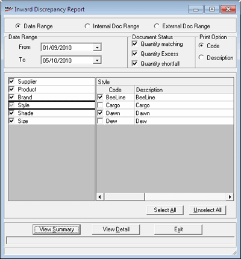

The Inward Discrepancy report provides information about the item-wise quantity difference between purchase order, delivery challan and physically received stock for a specified period or a range of internal documents or external documents.
Summary report gives information on each document from the vendor/ HO as Matching (documented Quantity = Received Quantity), Excess (Documented Quantity < Received Quantity), Shortfall (Documented Quantity > Received Quantity) or Not Inwarded (Document is Received and DC import is done but not inwarded in the system).
Detailed report gives the status of each stock item in every document from the vendor/ HO as Matching (documented Quantity = Received Quantity), Excess (Documented Quantity < Received Quantity), Shortfall (Documented Quantity > Received Quantity) or Not Inwarded (Document is Received and DC import is done but not inwarded in the system).
How to reach: Reports > Stock > Inward Discrepancy
The Inward Discrepancy Report window is displayed.

Select Date Range to view discrepancy in stock for a specific period, Internal Doc Range to view the report for a range of internal documents or select External Doc Range to view stock difference for a specific external document.
If you have selected Date Range, choose From and To.
If you have selected Internal Doc Range, the Document Range group replaces the Date Range group. Enter Document Prefix, From and To to generate the report for the specified set of internal documents.
If you have selected External Doc Range, the External Document group replaces the Date Range group. Enter Document No. to generate the report for the specified external document.
Document Status: Select Quantity matching, Quantity Excess or Quantity shortfall to include the corresponding documents in the report.
Print Option: Select Code or Description to display the corresponding values in the report.
Select Supplier, Product, Brand, Style, Shade and/ or Size to filter the report based on these attributes. Once you select any of these attributes, the corresponding values are displayed to the right.
Select All: Click to select all values in the list. Then you may unselect the values not required in the report.
Unselect All: Click to unselect all values in the list. Then select the required values.